/math-f963d3c66aa9a89e64a6db3d0dd63351.png "s_1^2\,\!") および
および
F 検定は、2つの標本の分散の比を計算し、2つの標本データが等しい分散を持つ母集団からとられたものかどうかを検定します。そして、仮説は次の形式をとります。
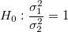
vs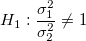
両側検定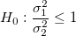
vs 上側検定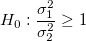
vs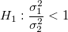
下側検定F検定の統計量は次のように計算されます。
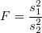
ここで、 および
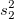
は観測された標本の分散です。比が1の場合、等しい分散であることを示しており、比が1から外れると、母分散は等しくないということを示しています。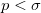
の場合、2つの標本の分散が等しいという仮説が棄却されます。 このとき p は計算された確率で、/math-3ac6004d77c0cc0055e95c99b9dfd7e0.png "\sigma\,\!") は選択された有意水準です。
は選択された有意水準です。
F検定の統計量に対する上側および下側信頼限界は次のようになります。
| 帰無仮説 | 信頼区間 |
|---|---|
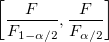 | |
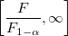 | |
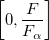 |
ここで、
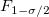
と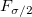
は、自由度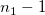
と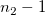
、有意水準 のF 分布の上側と下側の棄却限界値を表します。